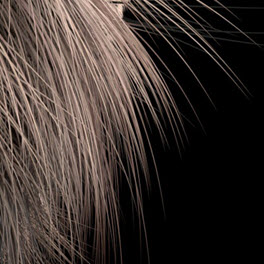

头发渲染

本节旨在帮助用户更好地了解如何在 Arnold 中高效地渲染头发。我们将通过渲染示例介绍和说明影响头发渲染速度的关键参数。另外还会介绍常规的优化提示和技巧。下面的教程将介绍与 Arnold 曲线形状节点和 standard_hair 着色器均相关的方面。
头发渲染模式(Hair Rendering Mode)
MtoA 使用 Arnold 曲线基本体渲染头发。曲线可以用三种不同的模式来渲染：“带状”(Ribbon)、“有厚度”(Thick)和“定向”(Oriented)。下图说明了它们之间的不同。本文档将只使用“带状”(Ribbon)模式，因为这是渲染纤细头发/毛发的最佳模式（本教程的基础）。
| “有厚度”(Thick)模式。“有厚度”(Thick)模式使头发看起来更像管状。 | “带状”(Ribbon)模式 |
Arnold 属性中的头发渲染模式
最小像素宽度(Min Pixel Width)(MPW)
头发或毛发由许多极为纤细的发束组成，这是它的性质之一。通常，物体在屏幕空间中的尺寸越小，就需要越多的摄影机 (AA) 采样才能将它渲染得既平滑又无动画闪烁，这让渲染头发颇具挑战。为了使毛发渲染更容易采样，Arnold 引入了“最小像素宽度”(Min Pixel Width)(MPW)。
MPW 的概念是使极细的发束在屏幕空间中自动变粗，同时将它们变得透明。这样有助于发束即使在抗锯齿设置较低的情况下，也能渲染得更平滑、动画闪烁更少。MPW 透明度只有当给定的头发在屏幕空间中比指定的 MPW 值更细时才会起作用；例如，当画面中的所有发束宽度都大于 1 像素，而 MPW 值设置为 0.5 时，根本不会使用透明度。如果摄影机从这一刻开始缩小镜头，让所有头发在屏幕空间中变得更细，当它们细至 0.5 像素以下时，MPW 系统将开始起作用，自动将头发宽度保持在 0.5 像素，同时随着它们逐渐变细/彼此远离，让它们变得越来越透明。
MPW 的精度很大程度上取决于自动透明度
在下图中，我们使用的 MPW 值介于 0 和 0.5 之间。需要指出的是，当 transparency_depth 增大时，即使抗锯齿设置相同，头发的渲染效果也会比之前更平滑。
即使 transparency_depth 设置为 0，头发厚度在屏幕空间中也始终至少为 0.5 像素，但是看起来并不透明。
| MPW：0 | MPW：0.2 | MPW：0.5 |
Min_pixel_width 还适用于点基本体。但是，运动模糊半径会使其失去效果。
透明深度(Transparency Depth)
渲染时将变得透明的发束层数取决于“渲染设置”(Render Settings) 中的 transparency_depth 设置。如下图所示，调整此值对渲染质量和渲染时间都有很大影响。将 transparency_depth 设置为 0 时，将始终对场景中的所有头发禁用 MPW。
“光线深度”(Ray Depth)设置中的 transparency_depth（“渲染设置”(Render Settings)）
MPW 仅适用于“带状”(Ribbon)模式下的头发。
下面的图像使用的 MPW 值为 0.1。可以看到，即使“透明深度”(Transparency Depth)值设置为 4，头发仍然相当地不平滑。使用这些值时，需要较高的抗锯齿设置才能生成平滑的效果：
|  | |
| 透明深度(Transparency Depth)：0 | 透明深度(Transparency Depth)：4 |
优化(Optimization)
将头发设为透明对渲染时间有很大影响。要获得最佳的渲染速度，非常重要的一点是使用合理的值。头发渲染的平滑程度/速度取决于三点：
- 最小像素宽度
- 透明深度
- 镜面反射采样数
- 摄影机 (AA) 采样数
摄影机 (AA) 采样数越高，越不需要依靠 MPW 就能获得平滑的头发渲染效果。如果您的场景已经在使用 10 个摄影机 (AA) 采样来获得平滑的运动模糊和 DOF，您可以使用比仅使用 4 个摄影机 (AA) 采样时小得多的 MPW 值。
上面提到，即使“透明深度”(Transparency Depth)设置为 0，MPW 也会起作用。因此，我们可以用它作为“限制”来控制头发即使不变得透明也允许达到的最细程度。考虑到上面的渲染时间，当“透明深度”(Transparency Depth)设置为 0 时，使用 MPW 增粗头发对渲染时间有积极作用。
*非常感谢 Jonathan Post 授权我们使用他们的狼模型。*